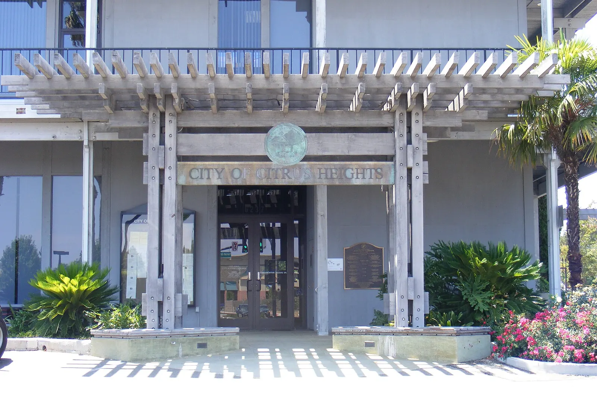

Notary in Citrus Heights
Liudmyla's home base. Meet at her office by appointment, or book a visit to your home or workplace.

| County | Sacramento County |
|---|---|
| Appointment types | At Liudmyla's office (address shared on confirmation) or a mobile visit |
| Neighbouring service areas | Antelope, Roseville (Placer County), Orangevale, Fair Oaks |
| Languages | English, Ukrainian, Russian |
| Fees | Notarial fee up to $15 per signature; travel quoted and confirmed before the appointment |
Citrus Heights questions
Why is the office address not published?
It is Liudmyla's own location, so the address is shared only with confirmed appointments.
Do you offer same-day or weekend appointments?
Same-day appointments may be available after confirmation. Weekends are possible only by prior arrangement, for an additional fee agreed in advance.
How do I pay?
By Zelle, cash or check at the appointment, after the fee has been confirmed with you. No payment is requested before the appointment is confirmed.